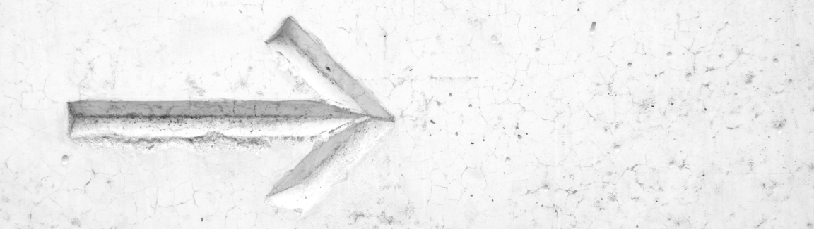

Pointers
On this page: Advantages of Pointers, Operators, Void Pointers, Good Practices

If you have read through the pages on Arrays and Files you will have noticed that pointers play an
important role in both of those scenarios. But what is a pointer anyway?
Put simply: a pointer is an address to a location in memory. When it all boils down, a pointer is simply a number, just like an int, but rather than holding a value it holds a memory address.
In Intro to Memory I demonstrated how when a value is stored in a variable its value is placed in a position in memory. Here's a quick recap:
int i = 5;

The value for i is stored at memory address 0x00B5F70C (remember, this is just a hexadecimal number and could be represented as the decimal number: 11925260).
In this case we can see that the number 5 is placed in at this memory address. Behind the scenes C keeps track of the address, 0x00B5F70C, and we can just use the variable name i to access the value
stored at this address.
In many languages this is where the complexity stops, however, in C we are able to take advantage of direct access to memory addresses. When we do so, we are using pointers.
Advantages of Pointers
- Arrays: As mentioned previously, arrays are constructed with pointers by allocating a contiguous block of memory, storing the address to the first element, then using pointer arithmetic to access subsequent elements. (More on pointer arithmetic later)
- Passing by Reference: By using pointers, we are able to pass a reference (that is the memory address) of a variable into a function and therefore work directly on the memory location rather than working on a copy of the variable.
- Dynamic Memory Allocation: Without pointers we would not be able to take advantage of the heap where the lifetime of the memory is not dictated by the call stack and where memory need not be explicitely declared at compile time. See Dynamic Memory for more info on the heap.
Operators
Pointers bring a few new operators into play. Let's see how to work with them.
-
The Address-of Operator -
&
Continuing from the above example ofint i = 5;, we can use the&operator to get the memory address of our variable i. If we wanted to print i's memory address to the console we could do it like so:
We also often use theint i = 5; printf("%p", &i); // prints 0x00B5F70C to the console&operator if we want to pass a reference of a variable into a function rather than copying the variable's value. A common example is the swap function:int a = 5; int b = 2; swap(a, b); // This would not swap the values outside the function. swap(&a, &b) // This does swap the values outside the function because we are referencing the memory location -
The Indirection Operator -
*
The indirection operator, represented by the*, is responsible for two similar functions when it comes to pointers.
Firstly, it is used when we're declaring a pointer variable:
Hereint *i;iis responsible for holding a memory address that points to a integer type. These memory addresses can be either 4 bytes (32-bits) or 8 bytes (64-bits) long depending on the compiler. A pointer is always 4 bytes/8 bytes long regardless of what type it is pointer to because the pointer variable simply holds the memory address of the first byte in memory, nothing more.
The second use of the indirection operator comes when we want to dereference a pointer into its type:
This can get a little confusing so let's look at how we might implement the swap function:int *i; // Declaring the pointer, as above. *i = 5; // Dereferencing the pointer and assigning the value 5. // We cannot directly assign the value of pointer without first dereferencing it.
Let's see how we can use both thevoid swap(int *a, int *b) { // swap() takes two pointers as its parameters int temp = *a; // Notice how temp is not a pointer type here *a = *b; *b = temp; } // In this example we can imagine that the variable a = 0x0F827C24 and *a = 5 // Likewise, b = 0x03427C24 and *b = 2 // In order to swap the values we first have to access them by dereferencing the pointers with the * operator&and*operators together:
We are also able to have pointers to pointers. We can represent this like so:int i = 5; // Typical variable declaration and assignment int *ip = &i; // Declaring an int pointer and assigning the memory address of i to itint i = 5; int *ip = &i; // points to i int **ipp = ip; // points to ip
Void Pointers
A void pointer is a type of pointer that can point to any object. This comes in very handy if we write a function that may take any type or return any type.
Before we dive deeper into void pointers we first need to understand how typecasting works. By placing a type in parentheses, e.g. (int) before a variable we can ask
the C compiler to try and change the type of that variable:
int i = 5;
double d = (double) i;
Here i is converted to a double and assigned to the variable d. This is especially useful when using void pointers:
char c = 'a';
int i = 5;
void *p;
// Cast the void pointer to type char pointer
p = (char *) &c;
printf("%c", *p); // prints 'c'
// Cast the void pointer to type int pointer
p = (int *) &i;
printf("%d", *p); // prints 5
Here, the variable p was able to point to both a char and and int allowing us to be flexible with our p pointer.
Good Practices
- When we are no longer using a pointer it is a good idea to assign it to NULL. If we try to access a null pointer we will get an error rather than accessing memory that may be invalid. Catching an error is usually a better idea than letting one slip through with invalid memory.
-
Null checking is often a good idea when using pointers because many functions will return null pointers if they fail and we will want to handle that somehow. Null checking is quite simple:
int *p = (int *) malloc(1 * sizeof(int)); // This may return a null pointer if it fails if (p) { /* Our pointer is not null */ } else { /* Our pointer is null */ }